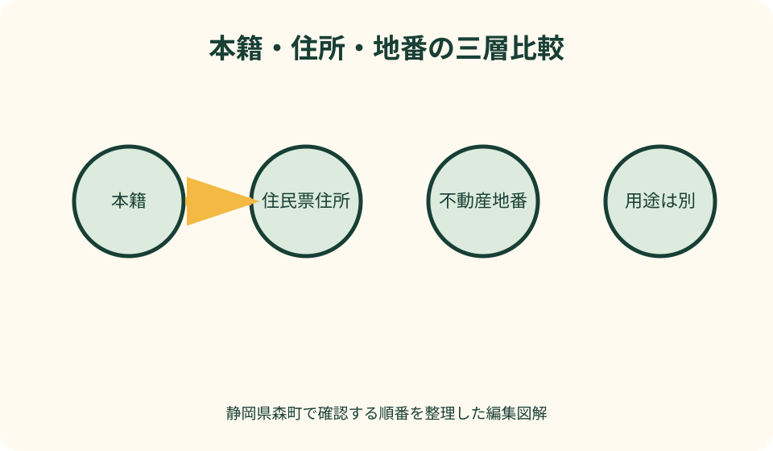
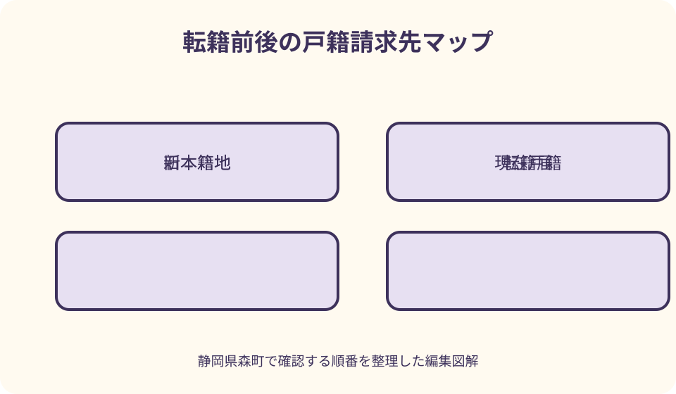

行政手続・証明書｜最終確認 2026-08-10
静岡県森町の転籍届を出す前に確認｜本籍の表示と戸籍請求の変化を整理
転籍は住所を移す手続ではなく、戸籍の所在を示す本籍を変更する届出です。森町へ引っ越したから本籍も自動で森町になるわけではなく、転籍しても住民票上の住所、選挙、学校、税、郵便が転居するわけではありません。便利そうな地番を新本籍として書けるか、誰が届出人になるか、どこへ提出するか、転籍後に現在戸籍・以前の戸籍・附票をどこへ請求するかを、提出前に住民生活課へ確認します。相続などで出生から現在までの戸籍を集める予定がある家庭は、請求先が増える可能性も含めて判断します。

編集イラスト転籍と転居を最初に分ける
本籍は戸籍上の所在を示す表示で、日常生活を送る住所とは別です。森町へ住民票を移しても、転籍届を出さなければ本籍が同時に変わるとは限りません。
反対に、本籍を森町へ転籍しても、実際の住居、郵便物の配達先、町内会、通学区域、税の住所が森町へ変わる手続ではありません。
家族の確認表を『戸籍』『住民票』『不動産の地番』『郵便住所』の四列にし、同じ数字が書かれていても用途が違うことを明記します。
目的が引越しなら転入・転出・転居の案内、目的が戸籍の所在変更なら転籍届の案内を読みます。窓口が同じでも届出を代用できません。
転籍したい理由を家族で言葉にする
実家へ本籍を戻したい、現住所の近くで戸籍を管理したい、婚姻や相続の前に整理したいなど、目的を一文にします。理由によって確認すべき証明が変わります。
『戸籍が取りやすくなる』だけを理由にする場合は、広域交付や郵送請求で現在の不便を解消できないかも確認します。転籍だけが選択肢ではありません。
記念の場所や施設名を本籍にしたい場合、希望する文字列が戸籍の本籍表示として使えるとは限りません。届書へ書く前に市区町村へ照会します。
相続人全員の戸籍を集めている途中なら、転籍によって必要な過去戸籍が消えると考えず、どの自治体に何が残るかを司法書士等へ相談します。
現在の本籍・筆頭者・戸籍の構成を確認する
手元の記憶ではなく、必要に応じ現在の戸籍証明や住民票の本籍記載で、正確な本籍と筆頭者を確認します。番地の有無や漢字を省略しません。
筆頭者は世帯主と同じ概念ではなく、死亡や住所変更で自動的に別の人へ置き換わるとは限りません。申請書で求められたら戸籍資料から書きます。
同じ戸籍に誰が在籍しているかを確認します。成人した子だから、別居しているからという理由だけで、同じ戸籍か別戸籍かを推測しません。
離婚、養子縁組、死亡、外国籍の配偶者などが関係する場合、一般的な転籍届の説明だけで届出人や効果を決めず、事前に住民係へ相談します。
新本籍候補は正確な土地の表示で照会する
新本籍はナビや郵便の住所をそのまま写せばよいとは限りません。町名、字、地番の正確な表記を、新本籍地を扱う市区町村へ確認します。
集合住宅の建物名や部屋番号、住居表示と土地の表示が異なる場合があります。賃貸借契約書だけで本籍表示を確定しません。
森町内の実家や所有地を候補にする場合も、固定資産資料の地番と戸籍に記載できる表示が一致するかを住民生活課へ聞きます。
他人所有地や公共施設を候補にできるか、所有者の同意が必要かなどは、一般記事の例を根拠にせず、新本籍地の戸籍担当へ候補表示を示します。
良い点
森町公式の戸籍・住民異動案内は、転籍届を戸籍届として、転入・転出・転居を所在地の届として分けており、入口の混同を避けられます。
戸籍証明の窓口請求と郵送請求の案内があるため、転籍前後にどの証明をどこから取るかを具体的に組み立てられます。
住民生活課住民係へ新本籍候補を事前照会すれば、届出日に土地表示の訂正で戻るリスクを減らせます。確認日と回答を残します。
広域交付が利用できる証明と、本籍地への請求が必要な証明を分けて聞けば、転籍を『証明取得を楽にする万能手段』として選ばずに済みます。

届出人と署名を戸籍単位で確認する
転籍届は、現在の戸籍の状態により届出人となる人を確認します。窓口へ持参する人と、届書に署名する届出人を同じだと決めません。
夫婦が在籍する戸籍、配偶者が死亡している戸籍、筆頭者だけの戸籍などで、署名欄の扱いを住民係へ具体的に尋ねます。
家族が遠方にいる場合、郵送で署名済み原本を集めるのか、代理持参が可能か、委任状が必要かを提出先へ確認します。
訂正が必要になったときの方法も事前に聞きます。家族が代筆したり、同意を得ずに署名を補ったりしません。
提出先と受付時間を三つの自治体から選ぶ
現在の本籍地、新しい本籍地、届出人の所在地が異なる場合、どこへ提出できるかを森町と関係自治体へ確認します。便利さだけで提出先を決めません。
森町へ提出するなら、住民生活課の開庁時間、夜間・休日の預かり、内容審査と補正連絡の時期を確認します。
新旧本籍地が異なる転籍は自治体間の処理時間が関わることがあります。提出日と新戸籍の証明取得可能日を同じ日にしません。
郵送提出を考える場合、利用可否、原本、本人確認、返送、到着日、連絡先を提出先へ確認します。普通郵便の投函日を受理日と思いません。
本人確認と持参物を提出先へ聞く
森町公式の戸籍・住民異動案内には本人確認書類の例が掲載されていますが、転籍届での具体的な持参物を事前に住民係へ確認します。
運転免許証、マイナンバーカード等の現住所が古い場合、本人確認に使えるかを推測せず、現在の資料の組合せを伝えます。
戸籍謄本の添付に関する制度変更があっても、届出先や戸籍の状況で追加確認が必要になる可能性があります。古いチェックリストを使いません。
届書、本人確認、現在本籍メモ、新本籍照会回答、連絡先を一つの封筒へ入れ、証明請求用の定額小為替等とは混ぜません。
転籍後に新しく作られる戸籍の内容を確認する
転籍後の現在戸籍へ、転籍前の戸籍にある事項がすべて同じ形で移記されるとは限りません。将来必要な身分事項がどの証明に載るか確認します。
転籍時点で戸籍から除かれている人や過去の事項を証明するには、転籍前の除籍・改製原戸籍等が必要になる場合があります。
『新しい戸籍だけ取れば出生から現在まで分かる』とは考えず、相続、年金、資格、親族関係など提出目的を証明先へ伝えます。
家族の戸籍台帳には、新本籍、筆頭者、転籍日、新しい請求先、旧本籍、旧戸籍の請求先を二段にして記録します。
戸籍の附票で必要な住所履歴を先に考える
戸籍の附票は戸籍と結び付いた住所履歴を確認する証明です。転籍前後で、必要な住所期間がどの附票に載るかを請求先へ確認します。
不動産登記、車、相続などで過去住所から現在住所へのつながりを求められているなら、提出先に必要な開始住所と終了住所を聞きます。
転籍前の附票が必要になる可能性があるため、現在の附票を『念のため』大量取得するのではなく、保存期間と必要表示を森町へ確認します。
附票、住民票、戸籍は証明する内容が違います。住所履歴が欲しいという理由で戸籍全部事項証明を取れば足りると決めません。
注文したい点
森町公式の届出一覧から、転籍届専用の届出人・提出先・必要物・処理後の証明を一画面で確認できるページへ進めると迷いが減ります。
新本籍候補の表示を事前照会する際、地図、固定資産資料、住居表示のどれを用意するかを具体例で示してほしいところです。
転籍前後の戸籍・除籍・附票について、どの自治体へ何を請求するかを図解で案内すれば、相続時の請求漏れを減らせます。
広域交付、郵送、コンビニ交付で取得できる証明の違いを、転籍を検討する人向けにも一覧化してほしいです。

相続手続の途中なら戸籍収集者と相談する
相続登記、預貯金、保険等で戸籍を収集中なら、転籍前に司法書士や提出先へ伝えます。戸籍の連続性をどの範囲で求められているか確認します。
すでに取得した戸籍が転籍で無効になると決めつけませんが、証明書の発行日や手続時点の条件は提出先が判断します。
被相続人や他の相続人の本籍を、自分の転籍届で変えられるわけではありません。誰の戸籍を扱っているかを一人ずつ分けます。
転籍後は請求先が増える可能性を家族へ共有し、旧本籍を忘れないよう記録します。ただし戸籍の画像を無制限の共有先へ保存しません。
婚姻・離婚・出生など他の戸籍届と順序を確認する
婚姻、離婚、出生、養子縁組など別の戸籍届を同じ時期に出す場合、どちらを先に受理するかで記載や届出先の確認が必要です。
結婚式、出産、離婚成立、転居の予定日だけで順序を決めず、当事者の現在戸籍と希望する戸籍を住民係へ説明します。
複数の届書を夜間へ預ける場合、審査順、不備が一件にあった場合、連絡先を確認します。同日提出が希望どおりの戸籍を保証するとは限りません。
氏名の振り仮名の通知・届出が進行中の場合も、転籍前後の通知元と記載状況を町へ確認し、同じ内容を重複して届けません。
提出後は受理・新戸籍・証明請求を別々に追う
転籍届を提出したら、受理の確認、新しい本籍表示、新戸籍の編製、証明書を取得できる時期をそれぞれ記録します。
勤務先等から証明を求められても、完成前の新戸籍を即日取得できると約束しません。必要なら受理証明で足りるか提出先へ聞きます。
旧本籍地へ請求する証明、新本籍地へ請求する証明を、証明書名、対象者、期間、通数で分けます。『戸籍一式』という曖昧な依頼をしません。
転籍が終わっても住所、マイナンバーカード、免許、郵便の変更は生じないのが通常かを確認し、不要な住所異動を重ねません。
広域交付で取れる戸籍と本籍地請求を分ける
戸籍証明の広域交付は、本籍地以外の市区町村窓口で一定の戸籍証明を請求できる仕組みです。ただし、すべての戸籍関係証明が同じ方法で取れるとは限りません。
請求できる人、本人確認、代理請求の可否、顔写真付き書類、発行までの時間を利用する窓口へ確認します。家族の戸籍を誰でもまとめて取れる制度とは考えません。
戸籍の附票、身分証明、独身証明、受理証明などが必要な場合は、広域交付の対象か、本籍地・届出地へ請求するのかを証明書ごとに尋ねます。
広域交付が使えるなら転籍の必要がないと直ちに結論づけず、今後必要な証明、家族の移動、窓口の待ち時間を比べます。逆に広域交付があるから転籍の影響がないとも考えません。
郵送請求は往復日数と連絡可能時間を見込む
森町公式の郵送請求案内は、請求書、本人確認書類の写し、手数料、返信用封筒、必要に応じ関係確認資料や委任状を掲げています。最新様式で一式を確認します。
請求書には本籍を番地まで、筆頭者、対象者、請求者との関係、証明の種類、通数、用途を具体的に書きます。『家族全員分』という曖昧な依頼を避けます。
平日の日中に連絡できる番号を記し、不足確認へ応答できるようにします。郵送日数だけでなく、自治体での確認と返送を見込み、提出期限の直前に請求しません。
手数料や郵便料金は改定され得るため、記事の金額を固定して準備しません。追跡や速達が必要か、返送先が住民登録地に限られるかも森町公式へ戻ります。
出生から現在までの戸籍を頼むときの伝え方を決める
相続や年金で『出生から現在まで』を求められたら、誰の、どの出来事からどこまでが必要かを提出先へ確認します。転籍前後の戸籍が複数になることがあります。
請求先へは対象者の氏名、生年月日、分かる範囲の本籍・筆頭者、必要な期間、用途を伝えます。家族の記憶だけで旧本籍の番地を作りません。
一つの自治体へ請求して届いた戸籍に前の本籍が記載されている場合、さらに前の自治体へ請求する必要があるかを専門家と確認します。届いた束を枚数だけで完成と判定しません。
転籍回数が多くても、それ自体を問題と決めつけません。ただし、家族が後からたどれるよう、新旧本籍、転籍日、取得済み戸籍の範囲を索引へ残します。
転籍しない選択を一年後の再確認日と組み合わせる
新本籍候補が定まらない、家族の署名が難しい、相続・婚姻手続の途中である場合は、今すぐ転籍しない選択も比較します。現状維持に届出は要らないかを確認します。
取得の不便が主な理由なら、次に戸籍が必要になる時期、広域交付、郵送請求、専門家の職務上請求等の適切な方法を整理してから再検討します。
本籍を置きたい実家が売却・解体予定でも、本籍と建物の存否、不動産所有は別です。ただし家族が場所を説明しやすいかという実務面は話し合います。
保留する場合は、判断を放置せず、家族の戸籍台帳へ理由と再確認日を書きます。制度改正や証明取得方法が変わった時に、同じ前提で結論を繰り返さないためです。
代案・結論
目的が戸籍証明の取得なら、転籍前に広域交付、郵送請求、代理請求の条件を比べます。届出をせず不便を解消できる場合があります。
新本籍の表示が確認できない場合は、推測で届書を出さず、候補地の市区町村へ地図や資料を示して回答を待ちます。
家族の署名がすぐ集まらない場合は、代筆や無断提出をせず、署名方法、郵送、提出日を住民係へ相談します。
結論は、転籍を住所変更ではなく戸籍の管理場所を変える手続として選ぶことです。新旧本籍と将来の証明請求先を説明できてから提出します。
大石の視点
不動産の相談で本籍と地番が同じ数字でも、それを所有権の証明に使うことはできません。本籍を置くことと土地を所有・利用することは別です。
相続では本籍の移動回数が戸籍収集の手間へ影響することがあります。今の便利さだけでなく、家族が将来たどれる記録を残します。
森町の実家を本籍に戻すことへ気持ちの意味があっても、空き家管理や登記名義が整うわけではありません。建物と土地の管理は別表で続けます。
転籍は急いで出す届ではありません。希望表示を町へ確認し、古い戸籍の請求先を控え、家族が目的を理解している状態を完成と考えます。
公式情報・確認先
掲載内容は次の一次情報を基礎に整理しました。営業、料金、催し、交通は変わるため、出発前または手続き前にリンク先で最新情報を確認してください。
- 戸籍・住民異動に関する届出（静岡県森町、2026-08-10確認）
- 戸籍謄本・戸籍抄本等の申請（静岡県森町、2026-08-10確認）
- 戸籍等の郵送請求（静岡県森町、2026-08-10確認）
- 申請書（委任状・住民票・印鑑証明・戸籍）（静岡県森町、2026-08-10確認）
- 戸籍（法務省、2026-08-10確認）